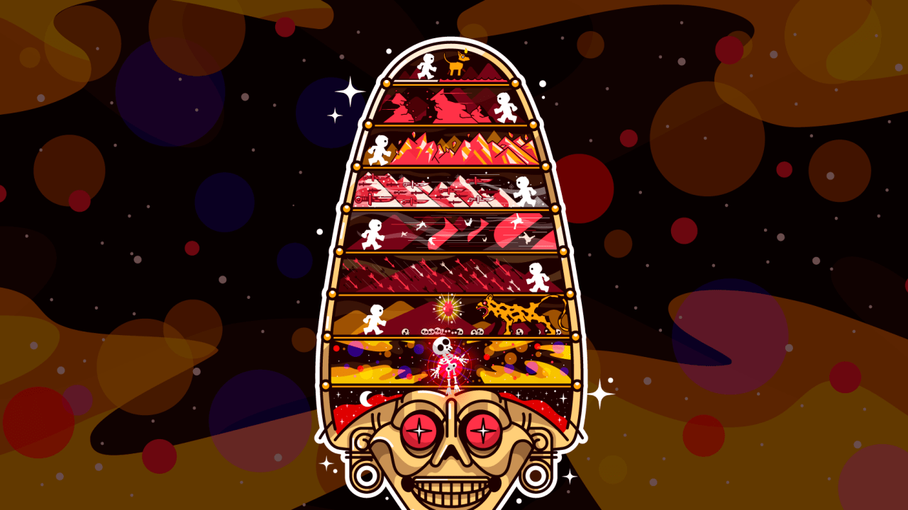

La muerte para muchas culturas alrededor del mundo, es sinónimo de tristeza y desgracia, sin embargo para México es una historia completamente diferente. Los hogares se llenan de colores cálidos, olores únicos de la temporada, sabores especiales, se escuchan canciones melancólicas salpicadas de alegría e incluso se baila con la muerte. El 2 de noviembre, fecha que lleva como nombre Dia de muertos y en el que los mexicanos celebran y rinden tributo durante varios días a aquellos seres queridos que ya han partido y los que hoy en día no se encuentran en vida.
Cementerio de Oxaca
El origen del día de muertos
Para entender el origen de la celebración, se debe retroceder a la Mesoamérica de hace miles de años,antes de la llegada de los españoles, donde los pueblos originarios realizaban rituales para guiar a los muertos en su camino hacia el Mictlán, el inframundo de los mexicas.
Los aztecas tenían la creencia de la continuidad de la vida después de la muerte y por la forma de morir, a las personas se les designaba uno de los cuatro destinos mortuorios, que eran custodiadas por deidades y representadas por elementos dentro del plano terrenal que servían como portales. de acuerdo a los estudios de Patrick Johansson “los cuatro destinos reconocidos en la realidad azteca eran:, Tonatiuhichan, Tlalocan, Chichihualcuauhco y Mictlan” (2012,220p). El Tonatiuhichan o casa del sol, estancan de Huitzilopochtli y destino de de los guerreros muertos en batalla, los capturaban para realizar sacrificios y las mujeres embarazadas. Otro no-lugar “donde se experimenta solitariamente la comunidad de los destinos humanos.” (Auge,1992), es Tlalocan, el paraíso de Tlaloc al que llegaban todos aquellos que perecieron por el agua. También estaba el Chichihualcuauhco o casa del maíz, que era gobernado por Huemac y destinado para los infantes muertos, en este lugar un enorme árbol los amamantaba hasta que puedan volver a nacer.
Los que así morían después de cuatro años, se volvían hermosas aves, colibries, pájaros sagrados, amarillos con plumas negras, mariposas blancas, mariposas -plumas, mariposas jícara- olla. Libaban las flores en todas partes y venían a la tierra a libar todo tipo de flores: equimitl "hojas de colorín", tzompancuahuitl "colorines", xi[oxóchitl "cabello de ángel", tlazoxiloxóchitl, "colliandra". (Códice Florentino, libro 111, cap. 3.)
Por último estaba el Mictlán que era el reinado de los muertos custodiado por Mictlantecuhtli, “el señor de la muerte”, era el destino para aquellas personas que morían por circunstancias relacionadas al agua, la guerra y el parto.
De igual forma, los aztecas fraccionaron el mundo en tres dimensiones que son el cielo en donde se encuentran los dioses, la tierra para los humanos y el inframundo a donde la mayoría de los muertos va, enfrentando los nueve infiernos del Mictlán.
Mictlán
Los Mexicas tenían la cosmovisión de que la muerte era la continuación de la vida, de acuerdo a la manera de morir, la persona tenía un lugar en algún paraíso a lado de Dios o en el inframundo, que corresponde al tercer plano mitológico del universo primitivo indigena, la región de las sombras o el reino de los muertos, también conocido como el Mictlán que “Es ante todo la tierra donde se inhuman los cadáveres o las cenizas de los cuerpos incinerados, y de donde brota la vegetación y el alimento que nutre a los hombres.” (Johansson,2012 p. 7)
A este lugar iban las personas que fallecían por muerte común o por causa de un accidente, esto significaba que no habían sido elegidos por los dioses de una manera especial, para poder llegar a este lugar las almas debían cruzar un camino formado por 9 dimensiones o niveles verticales y descendientes que corresponden a los estratos del inframundo en un tiempo aproximado de 4 años, al lograrlo podrían resurgir.
Después de que la persona abandonaba el plano terrenal despertaba a la orilla de un río, que se convertiría en la primera prueba para encontrar el descanso eterno de su alma.

Primer nivel: Itzcuintlan o “lugar de perros”
Este lugar estaba a la orilla de un río caudaloso, símbolo de las pasiones humanas, que el muerto debía atravesar con la ayuda de un xoloitzcuintle de color pardo, por esta razón era común que se enterrara a los muertos con huesos de perros.
Segundo nivel: Tepectli Monamictlan o “lugar de los cerros que se juntan”
En este nivel existen dos cerros que se abren y cierran, chocando entre sí repetidas veces. Los muertos debían buscar el momento adecuado para cruzarlo sin ser triturados, en este punto debía despojarse de toda su ropa.
Tercer nivel: Iztepetl o “cerro de cuchillos”
En este nivel había un cerro cubierto de pedernales filosos, que desangraban los cadáveres de los muertos cuando estos los escalaban para cumplir con la trayectoria.
Cuarto nivel: Itzehecayan o “lugar del viento de obsidiana”
En este nivel el muerto debe seguir su camino por una región de hielo y piedra abrupta en la que sopla un viento muy helado.
Quinto nivel: Paniecatacoyan o “lugar donde los cuerpo flotan como banderas”
En este nivel se ubicaba la última colina del itzehecayan, donde los muertos perdían la gravedad y el viento los arrastraba como banderas hasta que finalmente eran liberados para pasar al siguiente nivel.
Sexto nivel: Timiminaloayan o “lugar donde flechan”
Aquí había un sendero en el que a los costados habían manos invisibles que lanzaban puntiagudas flechas para atravesar a los muertos que cruzaban por aquí.
Séptimo nivel: Teocoyocualloa o “lugar donde las fieras se alimentaban”
En este nivel había jaguares que abrían el pecho de los muertos y se comían su corazón.
Octavo nivel: Izmictlan Apochcalolca o “lugar de aguas negras”
Aquí el muerto debía caminar por un paso estrecho en el que había piedras, para este punto terminaba de descarnar y su tonalli (alma) se liberaba por completo de su cuerpo.
Noveno nivel: Chicunamictlan
En este nivel el muerto debía atravesar las nueve aguas del río Chiconauhhapan, y cuando finalmente lo lograra, su alma sería liberada de todos los padecimientos del cuerpo por Mictlantecuhtli.
Referencias
- Anónimo. (2020). El Día de Muertos: origen y celebración en México. septiembre 28, 2021, de BLOG AMIXTLI Sitio web: https://acuariomichin.com/el-dia-de-muertos-origen-y-celebracion-en-mexico/
- Madrid, J.. (2020). ¿A DÓNDE VAMOS CUANDO MORIMOS? LOS DESTINOS MORTUORIOS PENSADOS POR LOS AZTECAS. octubre 5, 2020, de MXCity Sitio web: https://mxcity.mx/2016/10/inframundo-muertos-aztecas-epoca-prehispanica/
- National Geographic, (2018). Visita Mixquic en el «Día de Muertos». Octubre 17, 2021, de National Geographic en Español. Sitio web: https://www.ngenespanol.com/traveler/visita-mixquic-en-el-dia-de-muertos/
- Soltero, B.. (2020). DÍA DE MUERTOS: UNA TRADICIÓN QUE VIVE. octubre 5,2021, de UAL Sitio web: https://www.ual.edu.mx/blog/dia-de-muertos-una-tradicion-que-vive